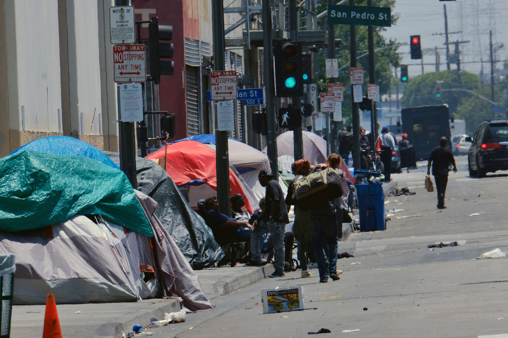
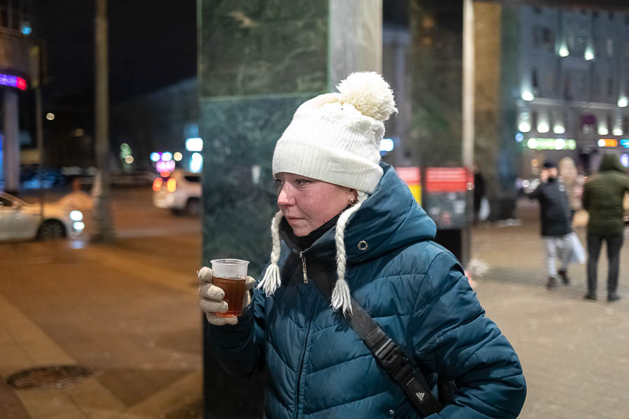
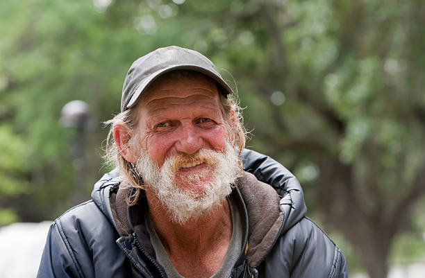

Не Родиться в рубашке
Жанна Нериновская
Почему вы не бездомные? — Вам просто повезло
Бездомность, состояние, социальное положение человека, связанное с отсутствием у него места, пригодного для проживания, за исключением государственных, муниципальных или негосударственных учреждений для бездомных, хостелов или подобных типов общежития, так как у него либо нет прав на конкретное жилое помещение (строение), которое он мог бы использовать для проживания, либо нет возможности такие права реализовать. Бездомные – это люди, не имеющие прав или возможности ночевать в жилом помещении, кроме социальных учреждений.
Бездомность – феномен, которому очень сложно дать чёткое определение. Во всех странах сталкиваются с трудностями, пытаясь зафиксировать определение бездомности в правовом поле или для целей статистического учёта в зависимости от специфики конкретной страны. Есть явные формы бездомности, когда человек ночует на улице или живёт в приюте для бездомных людей. В то же время есть множество ситуаций, когда человек живёт в каком-то жилье, но при этом является бездомным или находится в небезопасной жилищной ситуации с высоким риском бездомности.
У всех нас есть с рождения привелегии, у кого-то меньше, у кого-то больше, а у некоторых их и вовсе почти нет.
Капиталистический мир пытается обмануть общество байкой про то, что все мы в равных условиях и у нас есть возможность зарабатывать миллиарды и попивать Вдова Клико на яхте — главное много работать.
Однако мало кто учитывает, что ресурсы распределяются между людьми неравномерно и по принципу «кто успел — тот и съел».
В любом успехе богатого человека примерно такая картина: 80% это жизненные обстоятельства, которые подвели к деньгам и 20% собственные старания.
Наверное вы слышали или даже сами были на месте тех, кто любит осуждать уязвимых: бездомных, зависимых, болеющих и прочее. Есть распространённый миф, что эти люди сами выбрали такой путь и просто ничего не хотят делать со своим положением. И как же легко так рассуждать, не находясь на месте этих людей.
Есть привилегии заметные — например, выиграть лотерею. А есть принимаемые за должное: вырасти в семье, а не в детском доме; иметь своё жильё; возможность получать образование, а не искать способы выживания с раннего детства; поддерживающее окружение и прочее. Это всё везение и не более. Однако ведь есть люди, которым повезло меньше. У них не было рядом тех, кто рассказал бы о депрессии и предложил помощь, не было возможности даже ходить в школу и образовываться, не было примера здорового отношения к жизненным трудностям.
По данным «Ночлежки» чаще всего на улице оказываются дети из интернатов, мигранты, потерявшие жильё в следствии пожара, зависимые — то есть самые уязвимые. И когда ты теряешь дом, то потом выбраться обратно не просто трудно, а практически невозможно. На работу не устроиться, если ты плохо одет и давно не ходил в душ, не чистил зубы, а на улице этого не сделать.
Нередко им сложно трудоустроиться из-за стигматизации и мифов и бездомных. Стереотипы о таких людях далеки от реальности:
«Бездомный человек — обязательно алкозависимый». По статистике «Ночлежки» за 2022 год, только 6% клиентов оказываются на улице из-за химзависимости.
«Люди оказываются на улице, потому что не хотят работать». По факту одна из самых распространенных причин бездомности — потеря работы из-за сокращений, проблем со здоровьем или обмана со стороны работодателя.
По данным независимой исследовательской компании Validata в России насчитывается 2 130 000 бездомных людей. Бездомные люди — это те, кто оказались на улице по самым разным причинам. По информации «Ночлежки» самые распространённые причины такие:
- 33% — потеря возможности снимать жильё;
- 33% — потеря работы;
- 28%— переезд в другой город в поисках работы;
- 27% — утрата документов;
- 22% — семейные проблемы;
- 10% — химическая зависимость;
- 9% — заболевания и травмы;
- 6% — опыт тюремного заключения;
- 6% — обман работодателя;
- 6% — жертвы мошенничества.
Это результаты опроса 2022 года 2152-х человек. В опросе можно было выбирать несколько причин, поэтому в сумме показатели дают больше 100%.
Несмотря на то, что на улице можно оказаться из-за совершенно разных и непредсказуемых событий и вероятность потерять дом в капиталистическом мире довольно высока, в обществе всё ещё существует стигматизация людей, оказавшихся в подобной беде. Нередко в городах устанавливают лавочки с железными ограждениями, чтобы на них не могли спать, бездомным не дают даже в -30 градусов мороза погреться в подъезде, люди предпочитают не замечать и винить самих бездомных, из-за чего такие персоны оказываются в опасности наедине с тяжелейшими условиями для жизни и в конце-концов погибают.
Бездомные мужчины умирают на 15 лет раньше, чем «домашние» мужчины. А бездомные женщины — на 17 лет. Средний стаж бездомности у мужчин — 5.8 лет, у женщин – 7.8.
И опять же если мы вспомним статистику, то наши старания в жизни имеют влияние лишь на 20%, и это такая мелочь перед 80%. И когда из научно-популярной литературы пропагандируется мысль, что каждый в силах справиться самостоятельно со своими сложностями — это откровенная неправда. Мы все разные и у каждого свой, отличающийся от других опыт. Некоторые не в силах помочь себе: например, люди с деменцией, дети и в том числе бездомные.
Так правда ли бездомные виноваты в своём положении?
